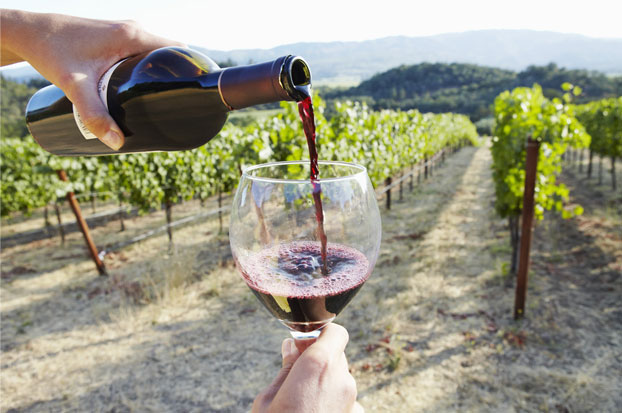

Pinenuts
Our Pine Nuts
The trees are growing!
Types of Pine Trees
https://en.wikipedia.org/wiki/Stone_pine https://en.wikipedia.org/wiki/Pinus_armandii https://en.wikipedia.org/wiki/Pinus_sibirica https://en.wikipedia.org/wiki/Torrey_pineHow to Harvest Pine Nuts
Humans have been harvesting pine nuts for thousands of years. People all over the world have enjoyed these treats and they are a necessity in recipes like pesto sauce. If you have a pine tree in your yard that has edible pine nuts you can harvest pine nuts too. Pinyon pines, native to the US, have edible pine nuts, as does the European stone pine and the Asian Korean pine. The gray pine and the Torrey pine also have pine nuts large enough to harvest.
Harvest pine nuts in the late summer to late fall. This is when the pine cones are ready to be picked. If the pine cone is open, the nuts can be shaken out of the pine cone immediately. If the pine cone is closed you must open it before you can remove the nuts. Harvest both open and closed pine cones.
Using a pickers ladder near the pine tree. Pick the pine cones on the tree by twisting them until they come off.
Place the unopened pine cones in the hessian sack. Fill it with as many pine cones as you can pick.
Place the bag of pine cones in the sun and leave it for 3 to 4 days. The pine cones need to dry out so they can open up and release their seeds.
Turn the bag over every day. Check inside the bag on the third or forth day to see if the pine cones are open. If they are not open, allow them to dry for another two days.
Hold the bag closed and shake it once the pine cones are open. This will cause the pine nuts to dislodge from the pine cones.
Pick the pine nuts out of the bag and place them on a screen. Shake the screen gently to clean the pine nuts.
Remove the pine nut's shells by breaking them off with your fingers.